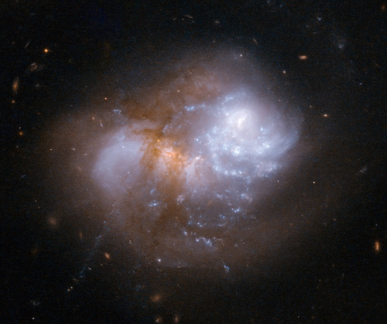

Arp 236 = IC 1623 train wreck
- Name: Arp 236 = VV 114 = IC 1623A + IC 1623B
- RA: 01 07 47.2
- Dec: -17 30 25
- Constellation: Cetus
- Type: Interacting collision!
- Size: 1.2'x0.9'
- Mag: 13 or brighter?
- Distance: ~270 million l.y. (redshift-based)
- IC description: "bright, considerably small, little elongated, north-following of 2 [with IC 1622]"
This fascinating pair of galaxies was discovered by Lewis Swift on November 19, 1897 at the age of 77, a couple of years before he lost his eyesight. He was observing with his 16-inch Clark refractor at the Lowe Observatory on Echo Mountain above Pasadena.

Arp placed the pair (Arp 236) in his unusual category of "Appearance of Fission" -- in the process of dividing or splitting apart. He added the comment "faint outer arm curves around through 270°." Instead, this is a highly disturbed contact pair that's apparently undergoing a major merger. The two nuclei are separated by only 15 arc seconds. This early-stage merger has triggered a burst of young clusters, particularly visible in the western (right) galaxy, but research shows the IC 1623B (the eastern galaxy) is optically obscured by several magnitudes and is very bright in the infrared, indicating intense star formation.
The Hubble image has the following description:
"IC 1623 is an interacting galaxy system that is very bright when observed in the infrared. One of the two galaxies, the infrared-bright, but optically obscured galaxy VV 114E, has a substantial amount of warm and dense gas. Warm and dense gas is also found in the overlap region connecting the two nuclei. Observations further support the notion that IC 1623 is approaching the final stage of its merger, when a violent central inflow of gas will trigger intense starburst activity that could boost the infrared luminosity above the ultra-luminous threshold. The system will likely evolve into a compact starburst system similar to Arp 220. IC 1623 is located about 300 million light-years away from Earth."
Pretty cool , right? Yet, I've only run across a few amateur observations of this pair including Alvin Huey's. Arp 236 isn't a difficult object to view, though "resolving" the two nuclei is a tougher challenge.
Here's my observation through my 24-inch f/3.7 Starstructure:
"IC 1623A, the brighter western component, appeared fairly bright, fairly small, round, 25" diameter, high surface brightness. IC 1634B, attached on the east end, appeared as a fairly faint, small glow that wasn't separately resolved, but appeared as a bulge or knot on the east end. 365x revealed a broad concentration with a brighter nucleus. IC 1622, situated 3.1' SW, appeared fairly faint, round, 25" diameter."
And as we always say,
“Give it a go and let us know!”